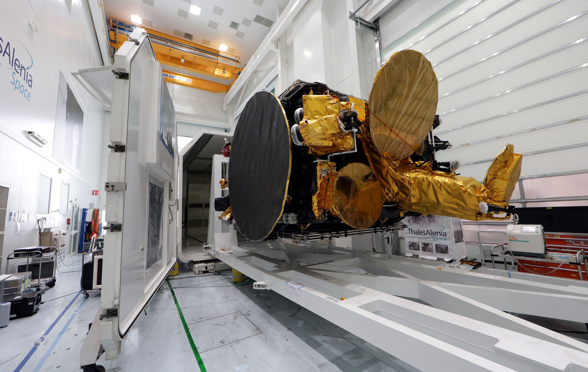
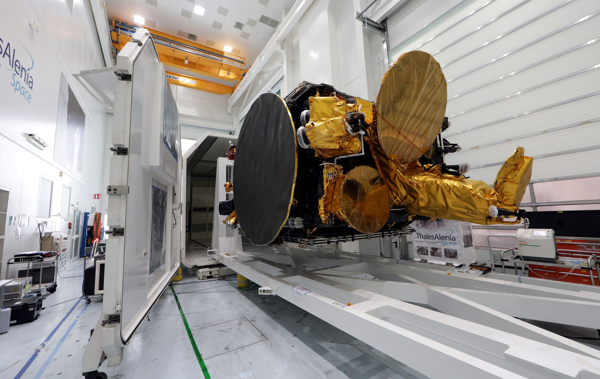
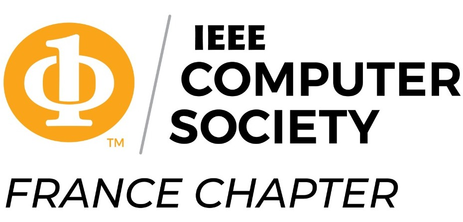

Authors of selected papers from ISORC 2025 will be invited to submit an extended version of their work for the Special Issue on AI-Driven Real-Time Distributed Computing for the Edge-Cloud Continuum review and possible publication in the Elsevier Journal of Systems Architecture: Embedded Software Design (JSA).
|
IMPORTANT DATES
|
|
| Submission deadline | February 02, 2025 (Firm) |
| Acceptance notification | March 05, 2025 |
| Camera-ready papers | March 20, 2025 |
| Early registration (FIRM) | April 20, 2025 |
ISORC has become established as the leading event devoted to
state-of-the-art research in the field of
object/component/service-oriented real-time distributed computing
(ORC) technology that consider one or more ilities, such as
performance, dependability, scalability, among others.
In addition to the main conference, ISORC 2025 will host a special
session dedicated to posters and demos, where participants will be
able to show prototypes, tools, simulators, and systems, which
demonstrate the applicability of real-time computing to different
applications.
Best Paper and Student Paper Awards will be delivered during the conference.
We solicit high-quality papers pertaining to all aspects of ORC technology, that consider one or more ilities, such as performance, dependability, scalability, among others and those that are well aligned with the 2025 theme. Authors are encouraged to consider submissions with a practical orientation and validation related to Case Studies & Applications in this area. The specific ORC focus areas include, but are not limited to:
-
Software architectures for real-time and/or distributed computing: Programming paradigms, ORC paradigms, object/component models, languages, synchronous languages, microservices architectures, soft, hard, performance-aware, distributed,... aspects of real-time computing, service-oriented architectures, scalability, performance, Event-Driven, Safety, Raliability, Middleware, Patterns and practices, etc.
-
Distributed and/or Real-Time Image, video and Stream Processing: Deep Learning, Methods and Algorithms, Federated Learning, distributed and parallel AI/ML, Real-Time stream processing with Kafka, Apache Spark and Flink, AI/ML for real-time and/or distributed image and video processing, distributed Digital Signal Processing in Communications, decentralized emerging technologies for real time, real time Image and signal processing Applications
-
Distributed and/or Real Time Communication for Emerging and Future Networks: Distributed and/or Real-time communications, networked platforms, protocols (WPAN, LPWAN, NB-IoT, 5G cellulars), Internet QoS, Peer-to-Peer computing, sensor networks, VANETS and V2V and V2I communications, Time-Sensitive and Time-predictable software, systems and hardware, Time Sensitive Networking, AI-powered Metaverse, Network Programmability, distributed and/or real-time packet processing for future networking infrastructures, Network Function Virtualization (NFV), Network Slicing, Digital twin for NGN and distributed and/or real-time data processing, .
-
Blockchain and Distributed Ledger Technology (DLT) for Distributed and/or Real-Time Computing: Blockchains architectures and their interoperability and scalability, Layer-2 solutions (e.g., state and side channels, DeFi protocols and NFTs, optimistic rollup Bundle, Zero Knowledge Rollup, off-chain), Layer 3 Blockchain protocols (e.g., interoperable protocols and cross-chain DApps, cross-chain RT applications), Self-Sovereign Identity (SSI) based ORC, consensus protocols and smart contracts, Blockchain oracles, trusted and dependable systems, Cryptographic techniques for ORC, etc.
-
Artificial Intelligence and Machine Learning for Distributed and/or Real Time Computing: Parallel and distributed AI/ML, Real-time AI/ML, Machine Learning on the Edge, TinyML, EdgeAI, Federated Learning, Ensemble Machine Learning Models, Generative AI and LLM, etc.
-
DevOps and CI/CD for Distributed and/or Real Time Computing: Continuous Integration/Continuous Deployment (CI/CD), Microservices Architecture, Containerization (Docker, Kubernetes), Orchestration, Infrastructure as Code (IaC), Monitoring and Logging, Distributed Systems, Event-Driven Architecture, Message Queues (Kafka, RabbitMQ), Serverless Computing, Scalability, Load Balancing, Fault Tolerance, High Availability, Cloud-Native Applications, API Management, Data Streaming, Real-Time Analytics, Network Latency Optimization, SRE (Site Reliability Engineering)
-
CyberSecurity and Security of Distributed and/or Real Time IoT Systems: Cyber security of critical infrastructures, cyber defense, Zero Trusted Architecture, Data Encryption, Privacy-preserving, Homomorphic encryption, Arbitrary code execution, Backdoors, Code injection, Botnets, Ensemble Learning for Anomalies and Attacks Detection, etc.
-
Optimization Approaches for Distributed and/or Real Time Computing: Optimization Algorithms, methods, and heuristics, unconstrained nonlinear, graph and concave quadratic functions, constrained nonlinear, convex optimization, combinatorial, metaheuristics for IoT, CPS, Edge-Cloud continuum.
-
Sustainable and Green Computing Transformation for Distributed and/or Real Time Computing Green energy and green networking, digital and green transformation, sustainable hardware and software, green software engineering and power modeling, carbon neutrality computation and networking, green network slicing and virtualization, data center sustainability, sustainable energy for 5G/6G Mobile Networks.
-
Formal Verification and Model Checking for Distributed and/or Real-Time Computing: Real-Time System verification and validation, Statistical model-checking, Formal Methods and Models, Formal verification technology, Reduction and Abstraction Techniques for Model-Checking, etc.
-
Ontology-based Knowledge Modeling for Distributed and/or Real-Time Computing: Knowledge and Reasoning frameworks for ORC, Semantics for model-based systems engineering, Ontology-Based Simulation, Distributed ontologies, Ontology alignment, Formal ontologies, Scalability in knowledge systems, Distributed Knowledge graph for ORC, etc.
-
Dependability, Fault tolerance, and Resilience of Distributed and/or Real-Time Computing: Fault Tolerance, Fault Detection and Recovery, Fault Injection Testing, Self-Healing, Failover, Error Correction, Redundancy, High Availability, Safety, Reliability, Autonomic Reconfiguration, Autonomic Resilience, Availability, Durability, Reliability, and Resilience, Error Detection, .
-
Algorithms for Distributed and/or Real-Time Analytics: Real-Time Stream Processing, Clustering, Classification, Mining and Inferencing, AI-ML, FedML, DRL and Statistical Modeling, Digital Twin and Predictive Analytics, Stream Correlation and Sampling, Dynamic Scheduling, Complex Event-Processing, Time-Series and TimeFM Analysis.
-
Distributed Management, Monitoring, Performance Evaluation of Distributed and/or Real-Time Computing: Infrastructures and Clusters Monitoring (Kubernetes, Grafana, prometheus, etc.), Distributed Network Monitoring, Management tools and techniques, Timing/Temporal Evaluation, Dependability, End-to-End QoS, System/Infrastructure Overheads, Fault Detection and Recovery, Large-scale Evaluations and Field Studies.
-
Operating Systems, Middleware and System software for Distributed and/or Real-Time Computing: Real-Time Kernels, Operating Systems, Virtualization/Containerization, Middleware for ORC, QoS Management and Performance, Decentralized Processing, Scalability, Extensibility, Synchronization, Resource Allocation, Scheduling, Energy Efficiency, Timing Analysis, Fault Tolerance and Resilience, Security, etc.
-
Distributed and/or Real-Time IoT Applications: Medical devices, Intelligent Transportation Systems, Industrial Automation Systems and Industry 4.0, Internet of Things and Smart Grids, Embedded and Cyber-Physical Systems (Automotive, Avionics, Spatial, Under-Water, Autonomous Vehicles, Consumer Electronics, Building Systems, Sensors, etc.), Multimedia Processing, Real-Time Web-based Applications, QoS-Aware and Real-Time Cloud/Edge/Fog Computing, SDN/NFV, Network Slicing, Blockchain, Distributed Ledger Technology (DLT) for Real-time Log Management, decentralized real-time data network, Digital Twins, time-sensitive social dispersed computing.
IEEE ISORC 2025 invites papers in three categories, all will be published in the IEEE proceedings. Submissions will be reviewed by at least three TPC members according to a single-blind review process. Submission guidelines for each category of paper are as follows:
-
Regular Research Papers: Papers should describe original work and papers submitted for review should be a maximum of 10 pages in length, using the IEEE conference paper format. A maximum of two extra pages may be purchased during the camera-ready submission of accepted papers.
-
Industrial Papers and Practitioner Reports: Papers describing experiences of using ORC technology in application or tool development projects, are an integral part of the technical program of ISORC. These papers should be no longer than 10 pages, using the IEEE conference paper format and may be less formal than research papers. A maximum of two extra pages may be purchased during the camera-ready submission of accepted papers. They should clearly identify and discuss in detail the issues that represent notable industrial advances. Reports with project metrics supporting their claims are particularly sought, as well as those that show both benefits and drawbacks of the approaches used in the given project.
-
Short Papers: Short research papers that are no longer than 6 pages, using the IEEE conference paper format, on real-time analytics are also invited, and should contain enough information for the program committee to understand the scope of the project and evaluate the novelty of the problem or approach.
The IEEE conference paper templates can be found here .
Papers are to be submitted through the HotCRP system .
We acknowledge support from the following.
|  |  |
 |